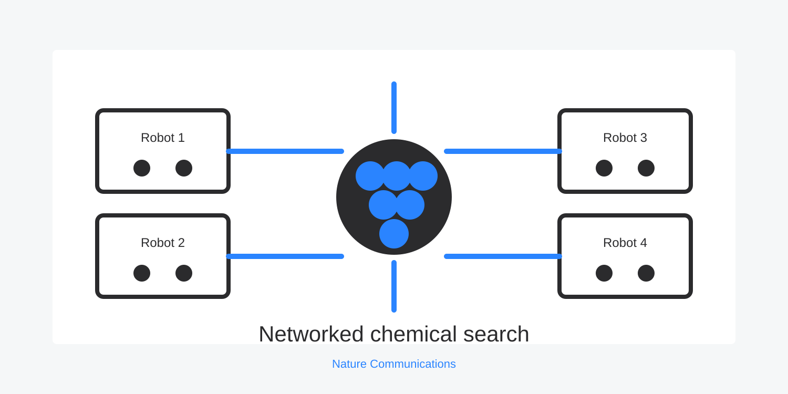

This project asked what chemistry could borrow from distributed computing. Instead of treating a robot as a single isolated machine, the work connected low-cost chemistry robots so they could share experimental choices and results in real time.
The system explored reaction spaces collaboratively, synchronized oscillating reactions, encoded information chemically, and assessed crystallization reproducibility.
The core lesson is directly relevant to modern automated labs: robot value increases sharply when hardware, software, data, and coordination protocols are designed together.
// Published in Nature Communications, 2018. Distributed lab automation and reaction multitasking.
Source: Networking chemical robots for reaction multitasking. Visual prepared for ChemoBotAI from the publication theme.
Back to projects